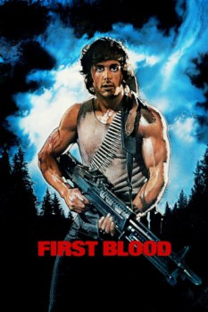

Country:United States, 93 minutes
Spoken languages:English
Genres:Action, Thriller, Drama
Director(s):Ted Kotcheff
Writer(s):Sylvester Stallone, William Sackheim, Michael Kozoll, David Morrell
Video Codec:Unknown
Number: 668

Certification:R
Storyline:
When former Green Beret John Rambo is harassed by local law enforcement and arrested for vagrancy, he is forced to flee into the mountains and wage an escalating one-man war against his pursuers.
Cast:
Sylvester Stallone (as John Rambo), Richard Crenna (as Col. Samuel Trautman), Brian Dennehy (as Hope Sheriff Will Teasle), Bill McKinney (as State Police Capt. Dave Kern), Jack Starrett (as Deputy Sgt. Arthur Galt)
Medium: Media file,
Location: D:\Rambo\Rambo.First.Blood.1982.mp4
Loaned: No
Aspect ratio: Unknown